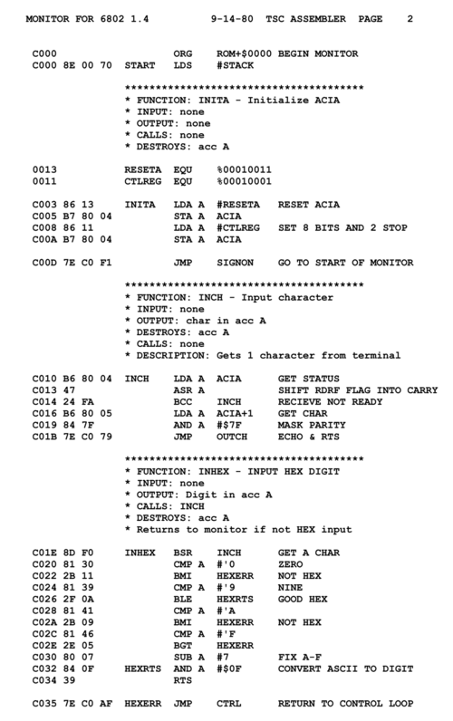

Язы́к ассе́мблера (англ. assembly language) — машинно-ориентированный язык программирования низкого уровня. Его команды прямо соответствуют отдельным командам машины или их последовательностям, также он может предоставлять дополнительные возможности облегчения программирования, такие как макрокоманды, выражения, средства обеспечения модульности программ. Может рассматриваться как автокод (см. ниже), расширенный конструкциями языков программирования высокого уровня[2][3]. Является существенно платформо-зависимым. Языки ассемблера для различных аппаратных платформ несовместимы, хотя могут быть в целом подобны. В русском языке может именоваться просто «ассемблером» (типичны выражения типа «писать программу на ассемблере»), что, строго говоря, неверно, так как ассемблером именуется утилита трансляции программы с языка ассемблера в машинный код компьютера. Автокод — язык программирования, предложения которого по своей структуре в основном подобны командам и обрабатываемым данным конкретного машинного языка[3].
